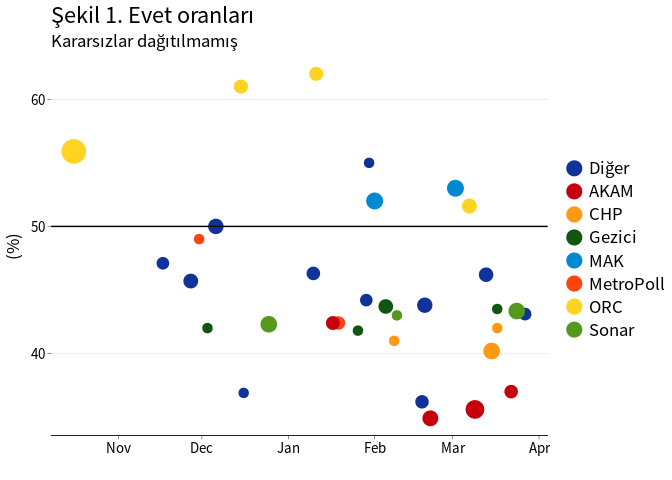
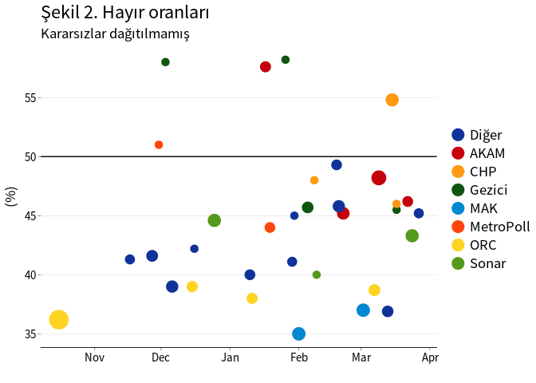
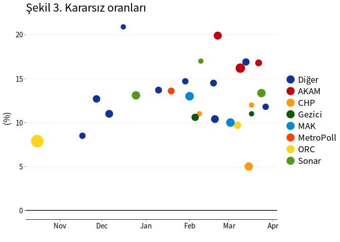
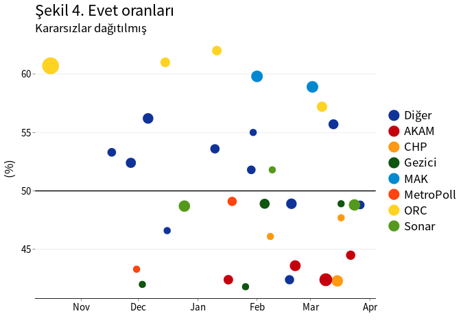
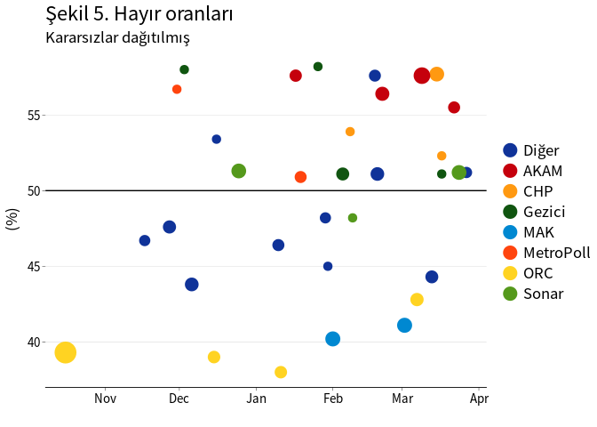
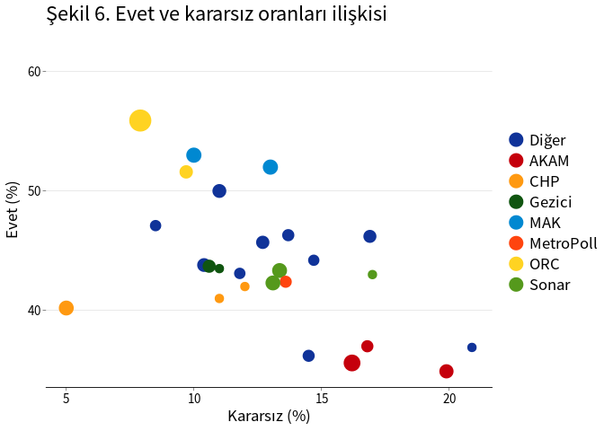
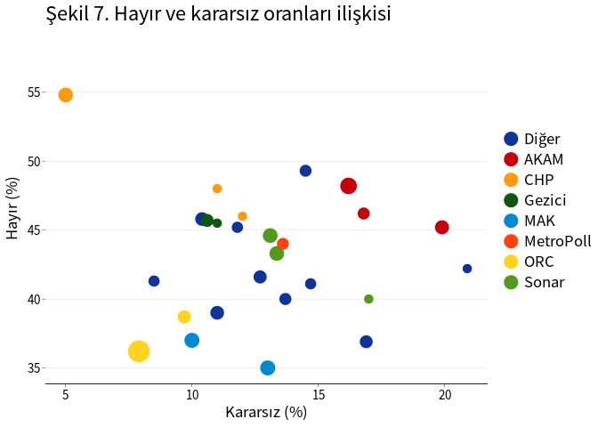

16 Nisan 2017’de yapılacak olan Anayasa Referandumu öncesinde pek çok anket yapılmaya başlandı. Bu kısa notta, referandum öncesi yapılan anket sonuçları toplu olarak özetlenmiştir.
Çalışmada veri kaynağı olarak Wikipedi’da sunulan veriler kullanılmıştır.1. Verilerde anketin yapıldığı tarih (başlangıç ve bitiş tarihleri), anketi yapan kuruluş, örneklem büyüklüğü, evet, hayır ve kararsız oy oranları ve kararsızlar dağıtıldığı durumdaki evet ve hayır oy oranları verileri bulunmaktadır. Bazı çalışmalarda örneklem büyüklüğü açıklanmamıştır. Örneklem büyüklüğü belli olmayan anketlerin 1000 kişi ile yapıldığı varsayılmıştır.
Veriler 27 Mart 2016 günü çekilmiştir, fakat notun altında sunulan R kodu kullanılarak analiz güncel veriler kullanılarak tekrarlanabilir.
3’den az anket yapan firmalar “Diğer” grubu olarak birleştirilmiştir.
Şekil 1, 2 ve 3’de kararsız oy oranları dağıtılmadığı durumda evet, hayır ve kararsız oy oranları görülmektedir.2 Anketler arasındaki tahmin farklılıkları oldukça fazladır. Referanduma yaklaşılırken kararsız oy oranlarında ciddi bir azalma gözlenmemektedir.



Kararsız oy oranları dağıtıldığı durumda evet ve hayır oy oranları Şekil 4 ve 5’de sunulmuştur. Referanduma yaklaşırken oy oranlarında net bir değişim gözlenmemektedir. Evet ve hayır oy oranları %50 ±10 puan gibi çok geniş bir aralıkta dağılmaktadır. Bu durum anket yapan firmaların tahmin hatalarının istatistiksel olarak kabul edilebilir hata oranının çok üstünde olduğunu göstermektedir.




Evet ve kararsız oy oranları arasında negatif bir ilişki bulunmaktadır: Kararsız oy oranının yüksek olduğu anketlerde evet oy oranı daha düşüktür (Şekil 6). Buna karşın hayır ve kararsız oy oranları arasında güçlü bir ilişki yoktur (Şekil 7). Kararsız oy oranlarının evet ve hayır oylarına oranlı olarak dağıtılması durumunda hayır oylarının artma olasılığı daha yüksek olmaktadır.
Zaman içerisinde oy oranlarında bir değişim olup olmadığını ve anket yapan firmaların tahminlerindeki yanlılıkları test etmek amacıyla basit bir regresyon modeli tahmin edilmiştir.3 Bu modelde kararsız oylar dağıtıldıktan sonraki evet oy oranları bağımlı değişken olarak kullanılmış, anketin yapıldığı (bitiş) tarih, örneklem büyüklüğü ve anket yapan kuruluş açıklayıcı değişken olarak kullanılmıştır. Anket yapan kuruluş değişkeninde, “Diğer” kuruluşlar referans grup olarak kabul edilmiştir. Evet ve hayır oranlarının toplamı %100 olduğu için, hayır oyları için tahmin edilecek modelin katsayıları, bu modelde tahmin edilen katsayıların tersi (-1 ile çarpılmış hali) olacaktır.
Tablo 1. Evet oy oranlarını belirleyen etkenler
| Bağımlı değişken: Evet oy oranı | ||||
|
|
|
|
|
|
| Anket tarihi | -0.022 | -0.028 | -0.002 | |
| (0.028) | (0.029) | (0.019) | ||
| Örneklem | 0.0005 | -0.0001 | ||
| (0.001) | (0.0005) | |||
| AKAM | -7.777*** | |||
| (2.362) | ||||
| CHP | -5.840** | |||
| (2.479) | ||||
| Gezici | -6.002** | |||
| (2.130) | ||||
| MAK | 8.493** | |||
| (3.179) | ||||
| MetroPoll | -5.277* | |||
| (2.810) | ||||
| ORC | 8.797*** | |||
| (2.351) | ||||
| Sonar | -1.328 | |||
| (2.465) | ||||
| Sabit | 49.872*** | 431.695 | 524.726 | 92.521 |
| (1.074) | (480.741) | (500.732) | (322.121) | |
| Gözlem sayısı | 32 | 32 | 32 | 32 |
| R2 | 0.000 | 0.021 | 0.039 | 0.752 |
| Adj R2 | 0.000 | -0.012 | -0.028 | 0.651 |
| Standart hata | 6.076 (df = 31) | 6.113 (df = 30) | 6.160 (df = 29) | 3.591 (df = 22) |
| F istatistiği | 0.631 (df = 1; 30) | 0.581 (df = 2; 29) | 7.419*** (df = 9; 22) | |
| Not: | p<0.1; p<0.05; p<0.01 | |||
Tahmin sonuçlarına göre, anketin yapıldığı tarih değişkeninin katsayısı çok küçük ve istatistiksel olarak sıfırdan farksız bulunmuştur. Bu sonuç evet (ve hayır) oy oranının zamanla değişmediğini göstermektedir.
Örneklem büyüklüğü değişkeninin katsayısı istatistiksel olarak anlamlı bulunmamıştır.
Anket yapan kuruluşlara bakıldığında, MAK ve ORC firmalarının tahmin ettiği evet oranı, Diğer firma grubuna göre 8 ve 9 puan daha yüksektir. Bu iki firman 7 Haziran 2016 yılında yapılan seçimlerde Ak Parti oy oranlarını da gerçekleşenin oldukça (6 ve 4 puan) üzerinde tahmin etmişti.
Gezici ve AKAM firmaları da Diğer grubuna göre evet oy oranlarını 6 ve 8 puan daha düşük tahmin etmektedir. Bu iki kuruluş, 7 Haziran 2016 seçimlerinde Ak Parti oy oranlarını gerçekleşenin 3 puan altında tahmin etmişti. Bir başka deyişle, bu dört firmanın 7 Haziran seçim ve 16 Nisan referandum tahminleri aynı yönde taraflılık göstermektedir.
Bu çalışma kapsamında 16 Nisan 2017 referandumuna ilişkin anket sonuçları değerlendirilmiştir. 1 Kasım 2016’dan sonra yapılan 32 anketin sonuçlarına göre evet ve hayır oy oranları hemen hemen aynıdır (49.9 ve 50.1) ve bu oy oranlarında referanduma yaklaştıkça bir değişiklik gözlenmemektedir. Kararsız oy oranı oldukça yüksek olup zamanla fazla değişmemiştir. Anket yapan firmaların tahminleri arasındaki fark, tahmin hatası ile açıklanabilecek düzeyin ötesindedir.
Verilerin Wikipedia sayfasından çekilmesi, temizlenmesi, görselleştirilmesi ve tahminlerinde kullanılan R program kodu aşağıda sunulmuştur. Kullanılan temadaki farklilıklardan dolayı şekillerin formatı farklı olacaktır.
# Load R libraries - install them if not installed already
library(rvest)
library(ggplot2)
library(data.table)
library(stargazer)
# Read the web page
phtml <- read_html("https://en.wikipedia.org/wiki/Turkish_constitutional_referendum,_2017")
# Find the "table" nodes
ptables <- html_nodes(phtml, "table")
# Lits tables
ptables
# Get 15th table * If new tables are added to the page, table number may change
ptable <- html_table(ptables[15], header = T, dec = ".", fill=TRUE)
# Get the data from the table
class(ptable)
pdat <- ptable[[1]]
class(pdat)
# Make data table
pdat <- data.table(pdat)
# Change variable names
names(pdat)
setnames(pdat,
c("date", "firm", "ssize", "yes", "no", "und", "empty", "fyes", "fno"))
# Drop empty column
pdat[, empty := NULL]
# Structure
str(pdat)
# Remove comma's from ssize
pdat[, ssize := gsub(",", "", ssize)]
# Make all data numeric
cnames <- names(pdat)[3:8]
pdat[, (cnames) := lapply(.SD, as.numeric), .SDcols = cnames]
# Drop missing rows
pdat <- pdat[!is.na(yes)]
# Clean dates
pdat[, date := gsub('.*–(.*)', '\\1', date)]
# Date format
pdat[, datef := as.Date(date, format="%d %B %Y")]
# Assume sample size = 1000 for missing ones
pdat[, nsize := ssize]
pdat[is.na(nsize), nsize := 1000]
# Define firm groups
pdat[, nc := .N, by = firm]
pdat[nc < 3, firm := "Diğer"]
# Set the reference level for firm
pdat[, firm := relevel(as.factor(firm), "Diğer")]
# Plots
p1 <- ggplot(pdat[datef > "2016-07-15"], aes(x = datef, y = yes, size = nsize, color = firm)) +
geom_point() + geom_hline(yintercept = 50) + theme_bw() +
scale_size_continuous(guide="none", range=c(3,8)) +
guides(colour = guide_legend(override.aes = list(size=5))) +
labs(title = "Şekil 1. Evet oranları", subtitle = "Kararsızlar dağıtılmamış",
x = "", y = "(%)")
p1
p2 <- ggplot(pdat[datef > "2016-07-15"], aes(x = datef, y = no, size = nsize, color = firm)) +
geom_point() + geom_hline(yintercept = 50) + theme_bw() +
scale_size_continuous(guide="none", range=c(3,8)) +
guides(colour = guide_legend(override.aes = list(size=5))) +
labs(title = "Şekil 2. Hayır oranları", subtitle = "Kararsızlar dağıtılmamış",
x = "", y = "(%)")
p2
p3 <- ggplot(pdat[datef > "2016-07-15"], aes(x = datef, y = und, size = nsize, color = firm)) +
geom_point() + geom_hline(yintercept = 0) + theme_bw() +
scale_size_continuous(guide="none", range=c(3,8)) +
guides(colour = guide_legend(override.aes = list(size=5))) +
labs(title = "Şekil 3. Kararsız oranları", x = "", y = "(%)")
p3
p4 <- ggplot(pdat[datef > "2016-07-15"], aes(x = datef, y = fyes, size = nsize, color = firm)) + geom_point() + geom_hline(yintercept = 50) + theme_bw() +
scale_size_continuous(guide="none", range=c(3,8)) +
guides(colour = guide_legend(override.aes = list(size=5))) +
labs(title = "Şekil 4. Evet oranları", subtitle = "Kararsızlar dağıtılmış",
x = "", y = "(%)")
p4
p5 <- ggplot(pdat[datef > "2016-07-15"], aes(x = datef, y = fno, size = nsize, color = firm)) +
geom_point() + geom_hline(yintercept = 50) + theme_bw() +
scale_size_continuous(guide="none", range=c(3,8)) +
guides(colour = guide_legend(override.aes = list(size=5))) +
labs(title = "Şekil 5. Hayır oranları", subtitle = "Kararsızlar dağıtılmış",
x = "", y = "(%)")
p5
p6 <- ggplot(pdat[datef > "2016-07-15"], aes(x = und, y = yes, size = nsize, color = firm)) +
geom_point() + theme_bw() +
scale_size_continuous(guide="none", range=c(3,8)) +
guides(colour = guide_legend(override.aes = list(size=5))) +
labs(title = "Şekil 6. Evet ve kararsız oranları ilişkisi",
x = "Kararsız (%)", y = "Evet (%)")
p6
p7 <- ggplot(pdat[datef > "2016-07-15"], aes(x = und, y = no, size = nsize, color = firm)) +
geom_point() + theme_bw() +
scale_size_continuous(guide="none", range=c(3,8)) +
guides(colour = guide_legend(override.aes = list(size=5))) +
labs(title = "Şekil 7. Hayır ve kararsız oranları ilişkisi",
x = "Kararsız (%)", y = "Hayır (%)")
p7
# Regression analysis
pdat[datef > as.Date("01/11/2016", format="%d/%m/%Y"), dum := 1]
m1 <- lm(fyes ~ 1, data = pdat[dum==1])
m2 <- lm(fyes ~ datef, data = pdat[dum==1])
m3 <- lm(fyes ~ datef + nsize, data = pdat[dum==1])
m4 <- lm(fyes ~ datef + nsize + firm, data = pdat[dum==1])
stargazer(m1, m2, m3, m4, type = "text")Bkz https://en.wikipedia.org/wiki/Turkish_constitutional_referendum,_2017↩
Şekillerde 7 Temmuz 2016’dan sonra yapılan anketler gösterilmiştir.↩
Tahminde 1 Kasım 2016’dan sonra yapılan anket verileri kullanılmıştır.↩